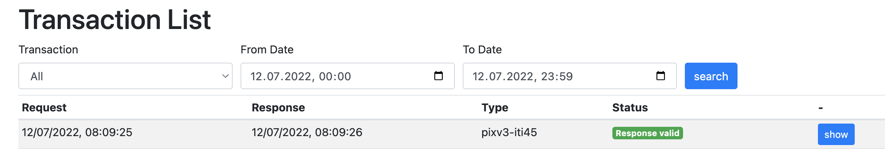

EPR Configuration
The EPR Integration Kit is available at https://test.ahdis.ch/eprik-cara/.

By default it lists all transactions made during the day. You can filter by IHE transaction type or time range.
Endpoints
That the requests are routed through EPRIK the following endpoints need to be configured in your primary system for EPRIK instead of CARA INT:
| Transaction | EPRIK | CARA INT |
|---|---|---|
| Host | test.ahdis.ch | ws.epr.cara.int.post-ehealth.ch |
| Port | 443 (https) or 80 (http) | 443 (https, clientcert) |
| XDS [ITI-18] | /eprik-cara/services/iti18Endpoint | /Registry/services/RegistryService |
| XDS [ITI-41] | /eprik-cara/services/iti41Endpoint | /Repository/services/RepositoryService |
| XDS [ITI-43] | /eprik-cara/services/iti43Endpoint | /Repository/services/RepositoryService |
| XDS MU [ITI-57] | /eprik-cara/services/iti57Endpoint | /Registry/services/RegistryService |
| XDS RMU [ITI-92] | /eprik-cara/services/iti92Endpoint | /PehpUpdateResponderIti92 |
| XDS-I RAD [ITI-69] | /eprik-cara/services/iti69Endpoint | /Repository/services/RepositoryService |
| PIX V3 [ITI-44] | /eprik-cara/services/iti44Endpoint | /UPIProxy/services/PIXPDQV3ManagerService |
| PIX V3 [ITI-45] | /eprik-cara/services/iti45Endpoint | /UPIProxy/services/PIXPDQV3ManagerService |
| PDQ V3 [ITI-47] | /eprik-cara/services/iti47Endpoint | /UPIProxy/services/PIXPDQV3ManagerService |
| HPD [ITI-58] | /eprik-cara/services/iti58Endpoint | /HPD/services/HPDService |
| HPD [ITI-59] | /eprik-cara/services/iti59Endpoint | /HPD/services/HPDService |
| CH:PPQ [PPQ-1] | /eprik-cara/services/ppq1Endpoint | /services/PR |
| CH:PPQ [PPQ-2] | /eprik-cara/services/ppq2Endpoint | /services/PR |
| XUA [ITI-40] | /eprik-cara/services/stsEndpoint | /EPDSTS/services/SecurityTokenService |
| ATNA [ITI-20] | 34.96.117.151:18001 (unsecured TCP) | 4.65.239.4:8080 (TLS) |
You find an overview of the current relevant specifications and the associated links for the Swiss Electronic Patient Record EPR also here